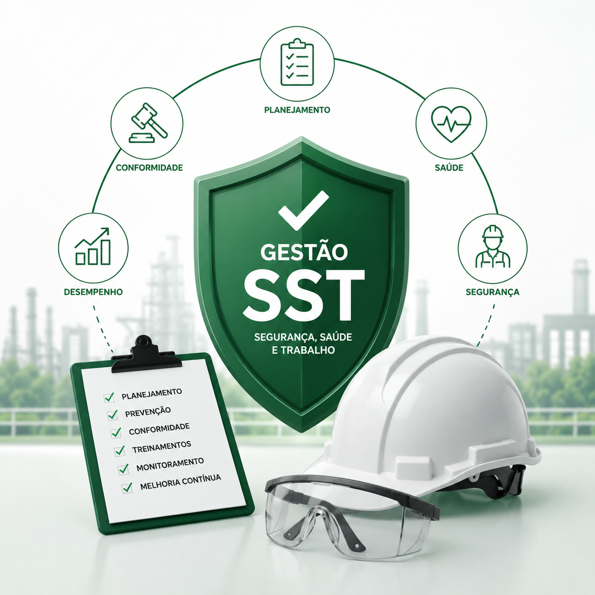

01
Medicina Ocupacional
Exames ocupacionais e acompanhamento médico para cuidar da saúde dos colaboradores em cada etapa da jornada.
Saiba mais ↗Cuidamos da saúde dos seus colaboradores e simplificamos a gestão ocupacional para sua empresa trabalhar com mais segurança, organização e tranquilidade.
Informação, acompanhamento e cuidado para decisões mais seguras.
Serviços pensados para facilitar sua rotina, atender às necessidades legais e colocar a saúde do trabalhador no centro.
Exames ocupacionais e acompanhamento médico para cuidar da saúde dos colaboradores em cada etapa da jornada.
Saiba mais ↗Documentação e suporte para estruturar uma rotina de prevenção, controle e segurança no ambiente de trabalho.
Saiba mais ↗Organização das informações ocupacionais para uma gestão mais clara, eficiente e alinhada às demandas da empresa.
Saiba mais ↗Elaboração e acompanhamento de documentos técnicos voltados à saúde, segurança e prevenção de riscos.
Saiba mais ↗Acesse o Guia SST da Medicina Ocupacional e encontre, em um só lugar, informações sobre programas, exames, riscos ocupacionais, NRs, legislação, eSocial SST e muito mais.

Uma visão rápida dos principais contextos em que a Medicina Ocupacional apoia empresas, equipes e trabalhadores.
Relações construídas com atendimento próximo, confiança e compromisso com a saúde ocupacional.


Empresas de diferentes segmentos confiam na Medicina Ocupacional para apoiar a gestão de saúde ocupacional, prevenção e conformidade.
Parceiros atendidos pela Medicina OcupacionalA Medicina Ocupacional atua com Segurança do trabalho para tornar a gestão de saúde e segurança mais simples, próxima e eficiente.
Unimos conhecimento técnico, atendimento humano e organização para ajudar empresas a cuidar de seus colaboradores e tomar decisões melhores.
Conhecemos sua empresa, sua operação e suas necessidades.
Definimos as soluções e os cuidados adequados ao seu cenário.
Executamos e acompanhamos a rotina de saúde ocupacional.
Seguimos próximos para manter sua gestão organizada.
Conte um pouco sobre sua empresa e descubra como a Medicina Ocupacional pode ajudar na sua rotina ocupacional.